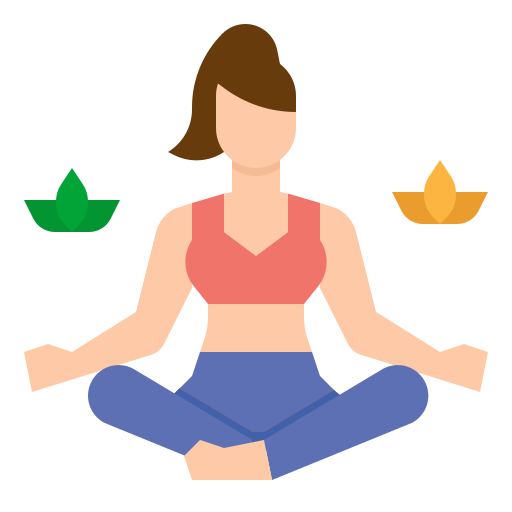
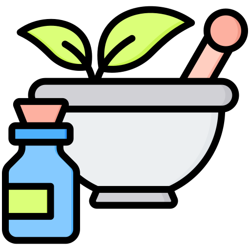

L'ÉQUILIBRE AU NATUREL
Retrouvez votre vitalité grâce à un accompagnement personnalisé et des solutions naturelles adaptées à votre rythme de vie.
PRENDRE RENDEZ-VOUS
NOS PRESTATIONS
Reiki
Une technique de soin énergétique pour rétablir l'équilibre et favoriser la guérison naturelle.
S'INFORMERReiki Shamballa
Une forme avancée du Reiki pour une reconnexion profonde à l'énergie universelle.
S'INFORMER
Sophrologie
Des exercices de relaxation et de respiration pour retrouver calme et sérénité au quotidien.
S'INFORMEREmotional Freedom Techniques
Une méthode de libération émotionnelle par stimulation de points d'acupression.
S'INFORMER
Rééquilibrage alimentaire
Un accompagnement personnalisé pour retrouver une alimentation saine et adaptée à vos besoins.
S'INFORMERQUI SUIS-JE ?
Christine B - Naturopathe
Après plusieurs années dans le commerce, puis dans l'accompagnement et la formation pour adultes, j'ai toujours eu à cœur d'aider les personnes à trouver leur équilibre et à avancer dans leur vie. Au moment de la retraite, j'ai choisi de me reconvertir dans un domaine qui me passionne profondément : la naturopathie. Cette discipline me permet aujourd'hui d'accompagner chacun vers un mieux-être global, en prenant en compte la personne dans sa globalité. J'ai ouvert mon cabinet afin de proposer un accompagnement bienveillant et personnalisé, dans un cadre d'écoute et de confiance, pour vous aider à retrouver équilibre, vitalité et harmonie au quotidien.
ME CONTACTER